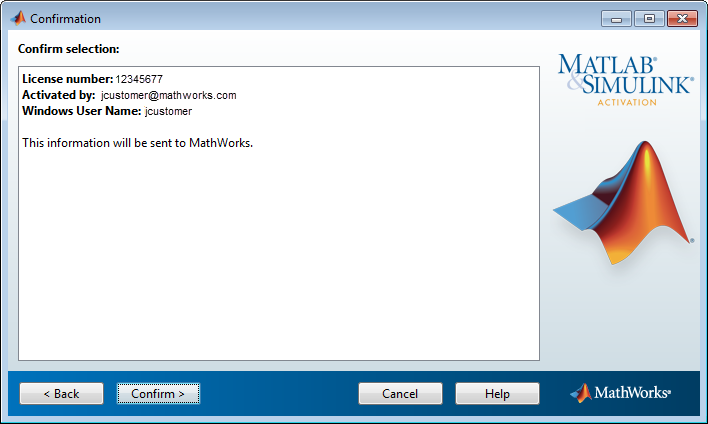

表示されている情報がすべて正しい場合は、[確認] をクリックします。
使用するインストール方法およびオペレーティング システムによっては、確認情報がここで示される例とは異なる場合があります。
インストールのアクティベーションを行うために、MathWorks® によって次の機能をもつライセンス ファイルが作成されます。
インストールされたコンピューターのみに製品の使用を制限する
インディビジュアル ライセンスのアクティベーションを行った場合は、特定のユーザーのみに製品の使用を制限する
作成されたライセンス ファイルは、インストーラーによりコンピューターにコピーされます。このライセンス ファイルによって、コンピューターで MathWorks 製品を実行できるようになります。また、MathWorks では MathWorks システム内にアクティベーションの記録を保持します。
